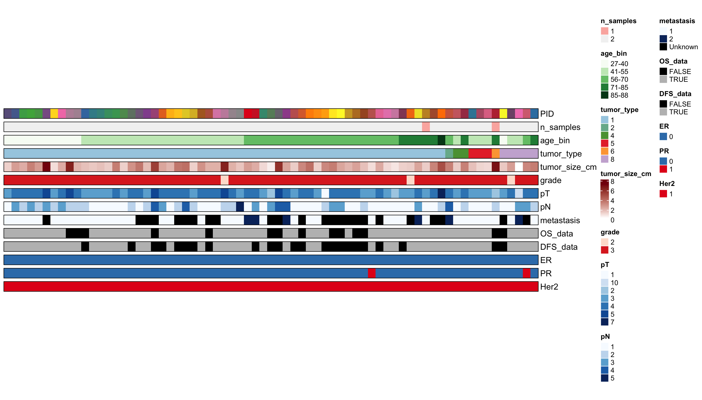
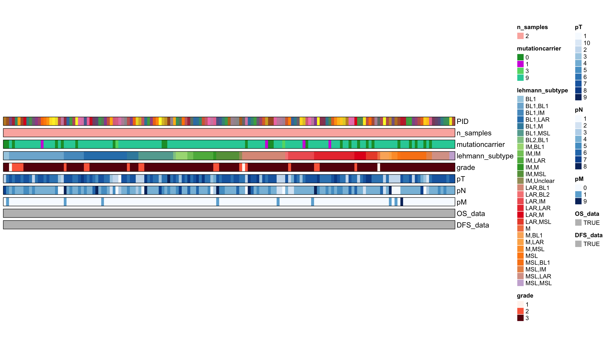

Last updated: 2022-03-21
Checks: 6 1
Knit directory: Non_IMC_TNBC/
This reproducible R Markdown analysis was created with workflowr (version 1.7.0). The Checks tab describes the reproducibility checks that were applied when the results were created. The Past versions tab lists the development history.
The R Markdown is untracked by Git. To know which version of the R Markdown file created these results, you’ll want to first commit it to the Git repo. If you’re still working on the analysis, you can ignore this warning. When you’re finished, you can run wflow_publish to commit the R Markdown file and build the HTML.
Great job! The global environment was empty. Objects defined in the global environment can affect the analysis in your R Markdown file in unknown ways. For reproduciblity it’s best to always run the code in an empty environment.
The command set.seed(20220309) was run prior to running the code in the R Markdown file. Setting a seed ensures that any results that rely on randomness, e.g. subsampling or permutations, are reproducible.
Great job! Recording the operating system, R version, and package versions is critical for reproducibility.
Nice! There were no cached chunks for this analysis, so you can be confident that you successfully produced the results during this run.
Great job! Using relative paths to the files within your workflowr project makes it easier to run your code on other machines.
Great! You are using Git for version control. Tracking code development and connecting the code version to the results is critical for reproducibility.
The results in this page were generated with repository version f709480. See the Past versions tab to see a history of the changes made to the R Markdown and HTML files.
Note that you need to be careful to ensure that all relevant files for the analysis have been committed to Git prior to generating the results (you can use wflow_publish or wflow_git_commit). workflowr only checks the R Markdown file, but you know if there are other scripts or data files that it depends on. Below is the status of the Git repository when the results were generated:
Ignored files:
Ignored: .DS_Store
Ignored: IMC_TNBC/.DS_Store
Ignored: IMC_TNBC/.Rhistory
Ignored: IMC_TNBC/.Rproj.user/
Ignored: Non_IMC_TNBC/.DS_Store
Ignored: Non_IMC_TNBC/.Rhistory
Ignored: Non_IMC_TNBC/.Rproj.user/
Untracked files:
Untracked: Non_IMC_TNBC/analysis/Metadata_Update.Rmd
Note that any generated files, e.g. HTML, png, CSS, etc., are not included in this status report because it is ok for generated content to have uncommitted changes.
There are no past versions. Publish this analysis with wflow_publish() to start tracking its development.
Aim: Create updated metasheet for TNBC TMA cohorts and visualize cohort heatmaps
library(tidyverse)
library(readxl)
library(knitr)
### TMA174
#General metadata
Meta_174 <- as.data.frame(read_excel("/Users/lasmey/Desktop/TNBC/Metadaten/ZTMA174_TNBC_LM.xlsx",col_names = T, na="NA",col_types = "text")) %>% mutate(tumor_size_cm = as.numeric(tumor_size_cm)) %>% mutate_if(is.numeric,round,digits=2) %>% filter(!is.na(PID))
#Load filenames for IMC data and check overlap with metadata
file_path = "/Volumes/rcc_volume/TNBC/img/"
TNBC_files <- list.files(file_path)
TNBC_files_174 <- TNBC_files[str_detect(TNBC_files,pattern = "ZTMA174")]
#Filter PID for which metadata or samples are missing
PID_174 <- str_split(TNBC_files_174,"_",simplify = TRUE)[,3] %>% unique()
PID_174_missing <- PID_174[!PID_174 %in% Meta_174$PID] #Patients for which we have samples but no metadata (n=22)
write_csv(as.data.frame(PID_174_missing),"/Users/lasmey/Desktop/TNBC/Metadaten/ZTMA174.2_Bnummermissing.csv")
PID_174_missing_2 <- Meta_174[!Meta_174$PID %in% PID_174,] %>% pull(PID) #Patients for which we have metadata but no samples (n=4)
##double-check that entries are distinct (which is TRUE)
dup <- Meta_174 %>%
count(PID) %>%
filter(n>1) %>%
pull(PID)library(DT)
library(prodlim)
#Count number of samples per PID
n_samples_PID_174 <- str_split(TNBC_files_174,"_",simplify = TRUE)[,3] %>% table(dnn = "PID") %>% as.data.frame()
Meta_174$n_samples <- n_samples_PID_174$Freq[match(Meta_174$PID,n_samples_PID_174$PID)]
#Age bin for patients (five groups)
Meta_174$age <- as.numeric(Meta_174$age)
Meta_174 <- Meta_174 %>% mutate(age_bin = ifelse(age <= 40, "27-40",
ifelse(40<age & age<=55, "41-55",
ifelse(55<age & age<=70, "56-70",
ifelse(70<age & age<=85, "71-85",
ifelse(85<age & age<=90, "85-88",NA))))))
#Survival data availability
Meta_174 <- Meta_174 %>% mutate(OS_data = ifelse(!is.na(Meta_174$status_OS),TRUE,FALSE)) %>% mutate(DFS_data = ifelse(!is.na(Meta_174$status_recurrence),TRUE,FALSE))based on the ComplexHeatmap package and the implemented HeatmapAnnotation function
library(ComplexHeatmap)
library(foreach)
library(ggsci)
library(RColorBrewer)
#Filter for columns to visualize
Meta_viz <- Meta_174 %>% filter(!is.na(Meta_174$n_samples)) %>% select(PID,n_samples,age_bin,tumor_type,tumor_size_cm,grade,pT,pN,metastasis,OS_data, DFS_data,ER,PR,Her2)
#Convert empty columns and NAs for easier handling with ComplexHeatmap package
Meta_viz[is.na(Meta_viz)] <- "Unknown"
Meta_viz <- Meta_viz %>% arrange(tumor_type,age_bin)
#Color scheme
#colnames(Meta_viz)
col <- list(PID = colorRampPalette(brewer.pal(9, "Set1"))(length(unique(Meta_viz$PID))),
n_samples = colorRampPalette(brewer.pal(9, "Pastel1"))(length(unique(Meta_viz$n_samples))),
age_bin = colorRampPalette(brewer.pal(9, "Greens"))(length(unique(Meta_viz$age_bin))),
grade = colorRampPalette(brewer.pal(2, "Reds"))(length(unique(Meta_viz$grade))),
pT = colorRampPalette(brewer.pal(9, "Blues"))(length(unique(Meta_viz$pT))),
pN = colorRampPalette(brewer.pal(9, "Blues"))(length(unique(Meta_viz$pN))),
metastasis = c(colorRampPalette(brewer.pal(9, "Blues"))(length(unique(Meta_viz$metastasis))-1),"black"),
ER = "#377EB8",
PR = c("#377EB8","#E41A1C"),
Her2 = "#E41A1C",
OS_data = c("black","grey"),
DFS_data = c("black","grey"),
tumor_type = colorRampPalette(brewer.pal(9, "Paired"))(length(unique(Meta_viz$tumor_type)))
)
col_list_1 <- foreach(i=1:13) %do% {
color= col[[i]]
names(color)= sort(unique(Meta_viz[,names(col)[i]]))
color
}
names(col_list_1) <- c(names(col))
#Save color list object for downstream usage
#saveRDS(col_list_1,file="/Users/lasmey/Desktop/RCC/Metadaten/color.rds")
#Heatmap Annotation
sample_anno <- HeatmapAnnotation(PID = Meta_viz$PID,
n_samples = Meta_viz$n_samples,
age_bin = Meta_viz$age_bin,
tumor_type = Meta_viz$tumor_type,
tumor_size_cm = Meta_viz$tumor_size_cm,
grade = Meta_viz$grade,
pT = Meta_viz$pT,
pN = Meta_viz$pN,
metastasis = Meta_viz$metastasis,
OS_data = Meta_viz$OS_data,
DFS_data = Meta_viz$DFS_data,
ER = Meta_viz$ER,
PR = Meta_viz$PR,
Her2 = Meta_viz$Her2,
col = col_list_1,
border = T,
na_col = "black",
gap = unit(5, "points"),
show_annotation_name = T,
show_legend = c(PID = FALSE),
name = "ZTMA174"
#annotation_label = c("PID (n=367)","Gender","Subtype","pT","pN")
)%v%NULL
#Display plot
draw(sample_anno)
library(tidyverse)
library(readxl)
library(knitr)
### TMA249
#General metadata
Meta_249 <- as.data.frame(read_excel("/Users/lasmey/Desktop/TNBC/Metadaten/ZTMA249_TNBC_LM.xlsx",col_names = T, na="NA"))
##Load filenames for IMC data and check overlap with metadata
TNBC_files_249 <- TNBC_files[str_detect(TNBC_files,pattern = "ZTMA249")]
#link spot_numbers with ID in filesnames
ID_numbers <- sort(as.numeric(str_split(TNBC_files_249,"_",simplify = TRUE)[,4]))
#detect breaks
diff(ID_numbers) [1] 1 1 1 1 1 1 1 1 1 1 1 1 1 1 1 1 1 1 1 1 1 1 1 1 1
[26] 1 1 1 1 1 1 1 1 1 1 1 1 1 1 1 1 1 1 1 1 1 1 1 1 1
[51] 1 1 1 1 1 1 1 1 1 1 1 1 1 1 1 1 1 1 1 1 1 1 1 1 1
[76] 1 1 1 1 1 1 1 1 1 1 1 1 1 1 1 1 1 1 1 1 1 1 1 1 1
[101] 1 1 1 17 1 1 1 1 1 1 1 1 1 1 1 1 1 1 1 1 1 1 1 1 1
[126] 1 1 1 1 1 1 1 1 1 1 1 1 1 1 1 1 1 1 1 1 1 1 1 1 1
[151] 1 1 1 1 1 1 1 1 1 1 1 1 1 1 1 1 1 1 1 1 1 1 1 1 1
[176] 1 1 1 1 1 1 1 1 1 1 1 1 1 1 1 1 1 1 1 1 1 1 1 1 1
[201] 1 1 1 1 1 1 1 17 1 1 1 1 1 1 2 1 1 1 1 1 1 1 1 1 1
[226] 1 0 1 1 1 1 1 1 1 1 1 1 1 1 1 1 1 1 1 1 1 1 1 1 1
[251] 1 1 1 1 1 1 1 1 1 1 1 1 1 1 1 1 1 1 1 1 1 1 1 1 1
[276] 1 1 1 1 1 1 1 1 1 1 1 1 1 1 1 0 1 1 1 1 1 1 1 1 1
[301] 1 1 1 1 1 1 1 1 1 1 1 1 1 1#Filter PID for which metadata or samples are missing
ID_meta <- Meta_249$ID_Number %>% unique()
PID_274_missing_2 <- Meta_249 %>% filter(ID_Number == ID_meta[!ID_meta %in% ID_numbers]) %>% pull(PID) #Patients for which we have metadata but no samples (n=1)
#Generate sample ID from PID and ID
Meta_249 <- Meta_249 %>% unite("sample_ID","PID","ID_Number",sep="_", remove = FALSE)
##double-check that entries are distinct (TRUE)
dup <- Meta_249 %>%
count(sample_ID) %>%
filter(n>1) %>%
pull(sample_ID)library(DT)
library(prodlim)
#1. Lehmann subtypes
Meta_249 <- Meta_249 %>% mutate(lehmann_subtype = ifelse(!is.na(Meta_249$basal_like_1),"BL1",
ifelse(!is.na(Meta_249$basal_like_2),"BL2",
ifelse(!is.na(Meta_249$immunomodulatory_IM),"IM",
ifelse(!is.na(Meta_249$mesenchymal_like_ML),"M",
ifelse(!is.na(Meta_249$mesenchymal_stem_like_MSL),"MSL",
ifelse(!is.na(Meta_249$luminal_androgen_receptor_LAR),"LAR",NA))))))) %>%
unite("Lehmann_Binary","basal_like_1","basal_like_2","immunomodulatory_IM","mesenchymal_like_ML","mesenchymal_stem_like_MSL","luminal_androgen_receptor_LAR",na.rm = TRUE, remove = FALSE)
#Double-check that Lehmann subtypes are unique (not for B14.54051_262)
SID_249_lehmann_unclear <- Meta_249[!Meta_249$Lehmann_Binary %in% c("Ja","ja", ""),] %>% pull(sample_ID)
Meta_249 <- Meta_249 %>% mutate(lehmann_subtype = ifelse(Meta_249$sample_ID == SID_249_lehmann_unclear, "Unclear",Meta_249$lehmann_subtype))
#2. Collapse data by PID (two samples per PID)
Meta_249 <- aggregate(Meta_249,by=list(Meta_249$PID),function(x){paste(x[!is.na(x)], collapse = ",")})
Meta_249 <- Meta_249 %>% mutate(PID = Meta_249$Group.1) %>% select(-"Group.1")
#3. Survival data availability and n_samples
Meta_249 <- Meta_249 %>% mutate(OS_data = TRUE) %>% mutate(DFS_data = TRUE) %>% mutate(n_samples = 2)based on the ComplexHeatmap package and the implemented HeatmapAnnotation function
library(ComplexHeatmap)
library(foreach)
library(ggsci)
library(RColorBrewer)
#Filter for columns to visualize
Meta_viz_1 <- Meta_249 %>% select(PID, n_samples, lehmann_subtype, mutationcarrier,grade,pT,pN,pM,OS_data,DFS_data)
#Convert empty columns and NAs for easier handling with ComplexHeatmap package
Meta_viz_1[is.na(Meta_viz_1)] <- "Unknown"
Meta_viz_1 <- Meta_viz_1 %>% arrange(lehmann_subtype,grade)
#Color scheme
#colnames(Meta_viz_1)
col <- list(PID = colorRampPalette(brewer.pal(9, "Set1"))(length(unique(Meta_viz_1$PID))),
n_samples = colorRampPalette(brewer.pal(9, "Pastel1"))(length(unique(Meta_viz_1$n_samples))),
grade = colorRampPalette(brewer.pal(9, "Reds"))(length(unique(Meta_viz_1$grade))),
pT = colorRampPalette(brewer.pal(9, "Blues"))(length(unique(Meta_viz_1$pT))),
pN = colorRampPalette(brewer.pal(9, "Blues"))(length(unique(Meta_viz_1$pN))),
pM = colorRampPalette(brewer.pal(9, "Blues"))(length(unique(Meta_viz_1$pM))),
OS_data = "grey",
DFS_data = "grey",
lehmann_subtype = colorRampPalette(brewer.pal(9, "Paired"))(length(unique(Meta_viz_1$lehmann_subtype)))
)
col_list_1 <- foreach(i=1:9) %do% {
color= col[[i]]
names(color)= sort(unique(Meta_viz_1[,names(col)[i]]))
color
}
names(col_list_1) <- c(names(col))
#Save color list object for downstream usage
#saveRDS(col_list_1,file="/Users/lasmey/Desktop/RCC/Metadaten/color.rds")
#Heatmap Annotation
sample_anno <- HeatmapAnnotation(PID = Meta_viz_1$PID,
n_samples = Meta_viz_1$n_samples,
mutationcarrier = Meta_viz_1$mutationcarrier,
lehmann_subtype = Meta_viz_1$lehmann_subtype,
grade = Meta_viz_1$grade,
pT = Meta_viz_1$pT,
pN = Meta_viz_1$pN,
pM = Meta_viz_1$pM,
OS_data = Meta_viz_1$OS_data,
DFS_data = Meta_viz_1$DFS_data,
col = col_list_1,
border = T,
na_col = "black",
gap = unit(5, "points"),
show_annotation_name = T,
show_legend = c(PID = FALSE)
#annotation_label = c("PID (n=367)")
)%v%NULL
#Display plot
draw(sample_anno)
sessionInfo()R version 4.1.2 (2021-11-01)
Platform: x86_64-apple-darwin17.0 (64-bit)
Running under: macOS Big Sur 10.16
Matrix products: default
BLAS: /Library/Frameworks/R.framework/Versions/4.1/Resources/lib/libRblas.0.dylib
LAPACK: /Library/Frameworks/R.framework/Versions/4.1/Resources/lib/libRlapack.dylib
locale:
[1] en_US.UTF-8/en_US.UTF-8/en_US.UTF-8/C/en_US.UTF-8/en_US.UTF-8
attached base packages:
[1] grid stats graphics grDevices utils datasets methods
[8] base
other attached packages:
[1] RColorBrewer_1.1-2 ggsci_2.9 foreach_1.5.2
[4] ComplexHeatmap_2.10.0 prodlim_2019.11.13 DT_0.20
[7] knitr_1.37 readxl_1.3.1 forcats_0.5.1
[10] stringr_1.4.0 dplyr_1.0.8 purrr_0.3.4
[13] readr_2.1.2 tidyr_1.2.0 tibble_3.1.6
[16] ggplot2_3.3.5 tidyverse_1.3.1 workflowr_1.7.0
loaded via a namespace (and not attached):
[1] colorspace_2.0-2 rjson_0.2.21 ellipsis_0.3.2
[4] rprojroot_2.0.2 circlize_0.4.14 GlobalOptions_0.1.2
[7] fs_1.5.2 clue_0.3-60 rstudioapi_0.13
[10] listenv_0.8.0 bit64_4.0.5 fansi_1.0.2
[13] lubridate_1.8.0 xml2_1.3.3 codetools_0.2-18
[16] splines_4.1.2 doParallel_1.0.17 jsonlite_1.7.3
[19] broom_0.7.12 cluster_2.1.2 dbplyr_2.1.1
[22] png_0.1-7 compiler_4.1.2 httr_1.4.2
[25] backports_1.4.1 assertthat_0.2.1 Matrix_1.3-4
[28] fastmap_1.1.0 cli_3.2.0 later_1.3.0
[31] htmltools_0.5.2 tools_4.1.2 gtable_0.3.0
[34] glue_1.6.1 Rcpp_1.0.8 cellranger_1.1.0
[37] jquerylib_0.1.4 vctrs_0.3.8 iterators_1.0.14
[40] xfun_0.29 globals_0.14.0 ps_1.6.0
[43] rvest_1.0.2 lifecycle_1.0.1 future_1.23.0
[46] getPass_0.2-2 scales_1.1.1 vroom_1.5.7
[49] hms_1.1.1 promises_1.2.0.1 parallel_4.1.2
[52] yaml_2.2.2 sass_0.4.0 stringi_1.7.6
[55] highr_0.9 S4Vectors_0.32.3 BiocGenerics_0.40.0
[58] lava_1.6.10 shape_1.4.6 rlang_1.0.1
[61] pkgconfig_2.0.3 matrixStats_0.61.0 evaluate_0.14
[64] lattice_0.20-45 htmlwidgets_1.5.4 bit_4.0.4
[67] processx_3.5.2 tidyselect_1.1.1 parallelly_1.30.0
[70] magrittr_2.0.2 R6_2.5.1 IRanges_2.28.0
[73] magick_2.7.3 generics_0.1.2 DBI_1.1.2
[76] pillar_1.7.0 haven_2.4.3 whisker_0.4
[79] withr_2.4.3 survival_3.2-13 future.apply_1.8.1
[82] modelr_0.1.8 crayon_1.5.0 utf8_1.2.2
[85] tzdb_0.2.0 rmarkdown_2.11 GetoptLong_1.0.5
[88] callr_3.7.0 git2r_0.29.0 reprex_2.0.1
[91] digest_0.6.29 httpuv_1.6.5 stats4_4.1.2
[94] munsell_0.5.0 bslib_0.3.1